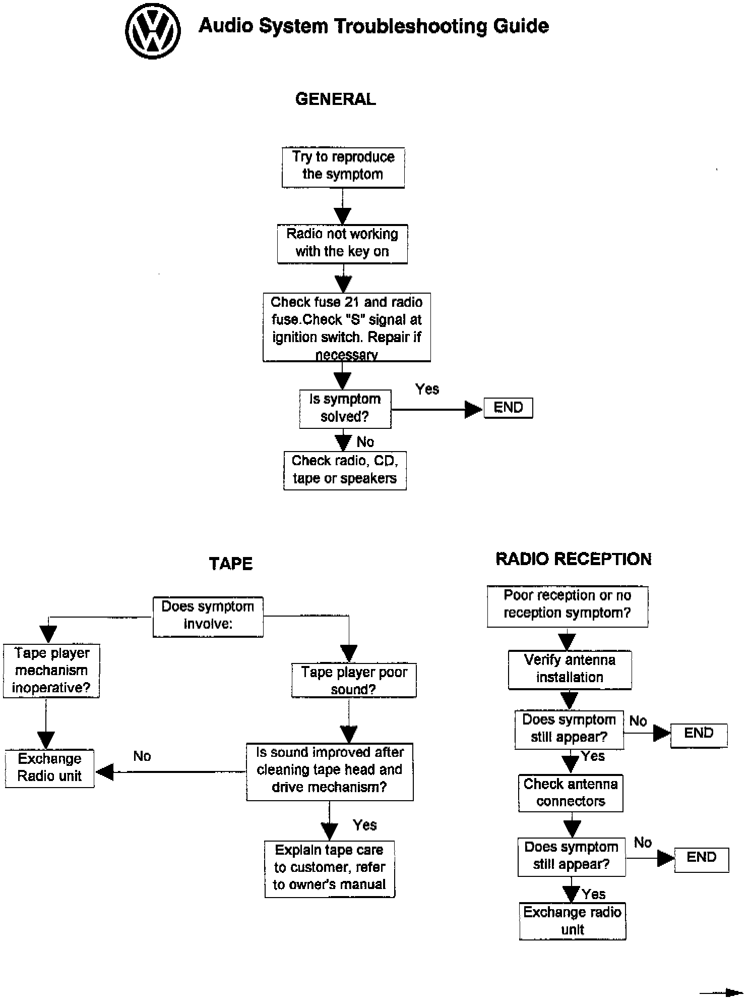
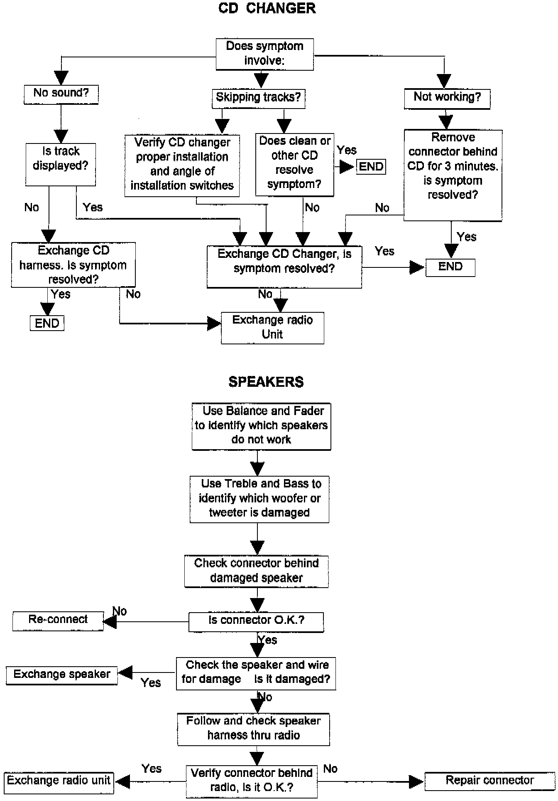

Audio System - Troubleshooting
Group: 91Number: 96-04
Date: Nov. 12, 1996
Subject:
Audio System Troubleshooting
Model(s):
Golf, GTI, Jetta, Cabrio 1993 -->
Condition
Audio system or components of the system perform inadequately or not at all.
Service


Use audio system troubleshooting guide to determine repair needed.